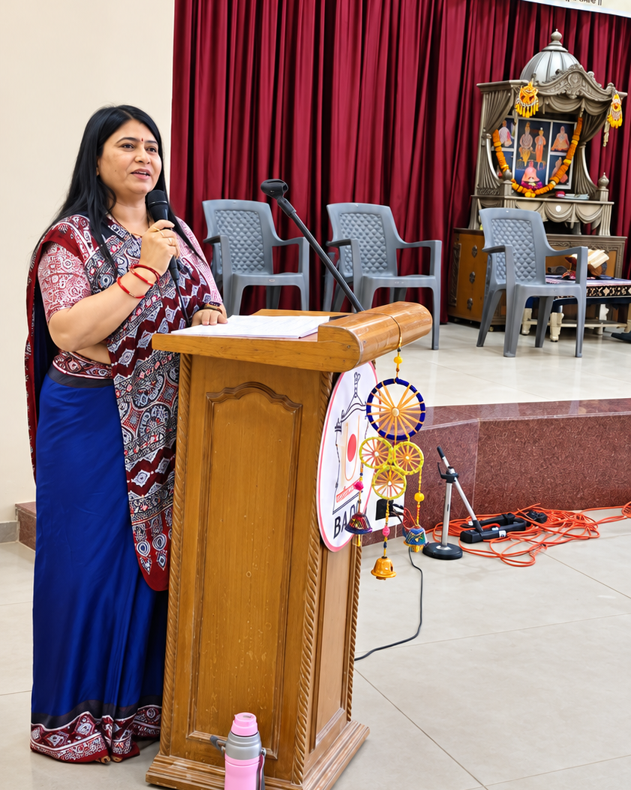
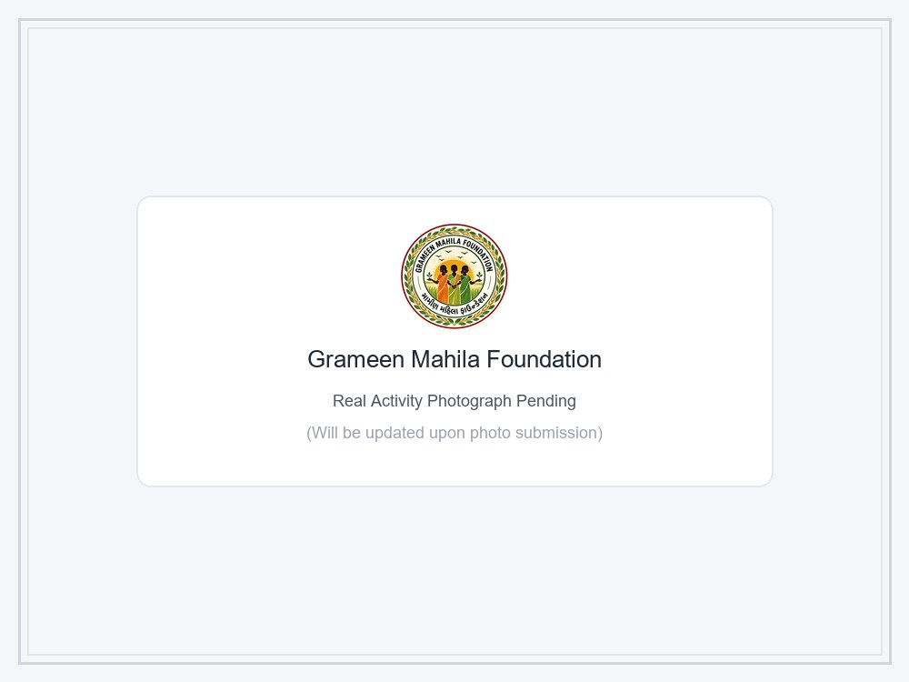

Women's Training

Women's Training
Comprehensive training programs that combine practical skills, health awareness, and financial confidence to help rural women earn an income.
Empowering Rural Women | Building Strong Communities
Together for a Better Tomorrow
Strong Women • Strong Families • Strong Communities
Gramin Mahila Foundation works with women, children, families and communities in rural areas to create opportunities, build skills and support a brighter future.

Gramin Mahila Foundation is an authentic grassroots non-profit organization working directly with women, children, and families who need support across rural Gujarat.
We believe lasting community progress begins in the village home. When rural women learn practical vocational skills like tailoring and fabric painting, gain financial confidence, and receive educational support, entire households and villages move forward together.
Every rural woman lives with dignity, self-confidence, and independent financial security through practical vocational skills.
To provide accessible skills training, student education support, native tree plantation, and compassionate relief across Gujarat villages.
Driven by a deep sense of social responsibility, Leena ben actively guides and runs Gramin Mahila Foundation's ground initiatives. Through continuous personal commitment and on-site encouragement, she works side-by-side with village women and families to ensure practical vocational training and education support reach those who need it most.
Explore our genuine activities supporting women, children, families, and communities in need.
Comprehensive training programs that combine practical skills, health awareness, and financial confidence to help rural women earn an income.

Teaching fabric painting, color mixing, and decorative patterns to village women and girls so they can turn creativity into a source of income.

Step-by-step training on sewing machine parts, fabric measurement, cutting, and stitching so women can become self-employed tailors.

Supporting village children with educational tools, healthy habits, and safety awareness to help them grow with joy and self-belief.

Conducting hands-on self-defence camps in Sanand to teach schoolgirls and women basic protective moves, quick reflexes, and fearless courage.

Providing free notebooks, stationery sets, school bags, and fee support so that bright students from poor families never have to drop out.

Supplying wholesome grains, fresh meals, and essential ration kits to very poor families, elderly villagers, and children facing hardship.

Organizing village workshops on legal awareness, women's health and hygiene, child education, and government welfare programs.

Distributing clean wearable clothes, warm blankets, and winter woolens to underprivileged children and families with dignity.

Bringing rural communities together through national celebrations, elderly assistance, and grassroots volunteer initiatives.

Planting native saplings in village commons and school spaces to foster a cleaner, greener, and healthier rural environment.

Providing emergency food kits, clean drinking water, and immediate assistance to rural families during floods and seasonal emergencies.
Genuine photographs from our training centers, community drives, and field relief activities.


Watch real foundation videos from our sewing training, tree plantation, disaster relief, and community celebrations.
Authentic on-site recording of our foundation's village awareness drive, empowering rural women with guidance on self-reliance, rights, health, and family well-being.
Real classroom recording of women learning machine tailoring and stitching at our Sanand center.
On-site video of volunteers and community members planting native trees in the village grounds.
Field footage showing our team providing food packages and relief aid in affected rural areas.
Reaching waterlogged homes and extending compassionate support to vulnerable families.
Village community gathering and national day celebration with local children and families.
Community members and youth participating in cultural celebrations and inspiring speeches.
Your support helps us work with women, children, families, and people in need.
Your kindness directly supports our practical initiatives, including sewing and painting classes for women, school supplies and fee support for needy students, food assistance, clothes donations, self-defence training, tree plantation, and disaster relief.
If you have questions, would like to visit our training center, or want to support our community work, please contact us directly.